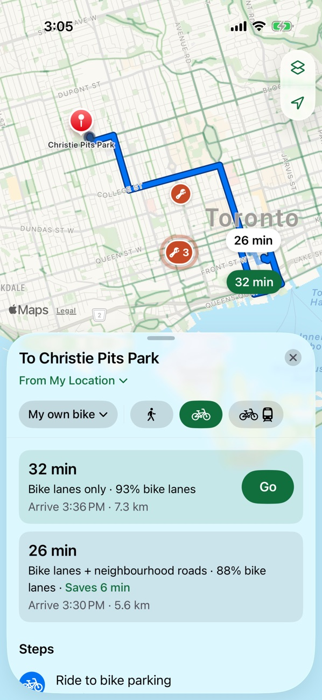
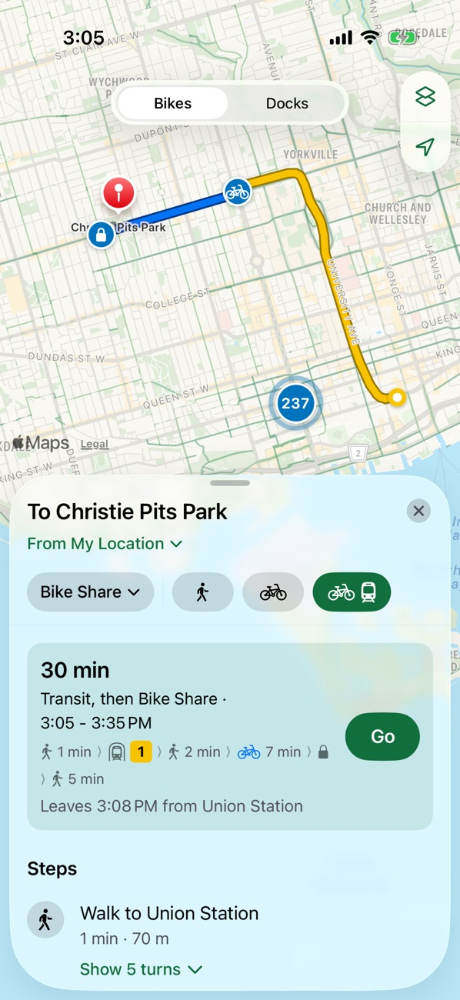
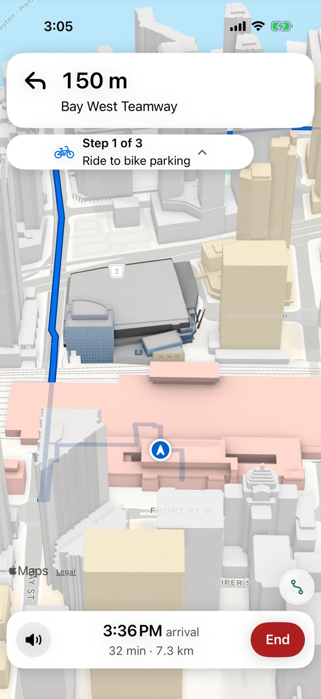

BikeTO
A personal project for getting around Toronto by bike and public transit.
Download on the App Store ↗About the project
I developed and published BikeTO, an app that brings cycling, Bike Share stations, and Toronto Transit Commission (TTC) trip planning together on one map.
- Cycling routes to help plan a trip through the city.
- Bike Share stations with bike and dock availability.
- TTC trip planning alongside cycling options.
Inside the app



Let’s connect.